Apresentação institucional · Maio 2026
J Queiroz Comércio e Serviços Ltda.
Onde estamos
VALE
Wabtec
Siemens
Alstom
MetrôRio
SuperVia
Slide 02 · Quem Somos
Quem SomosJ Queiroz
A J Queiroz em uma frase
Engenharia ferroviária onde a operação não pode parar.
Atuamos onde o trem precisa rodar amanhã. Janelas de manutenção curtas. Cronogramas que não cedem. Segurança que não negocia.
O que entregamos
Frentes de Atuação
Sinalização e circuitos de via
Via permanente: dormentes, soldas, lastro
Energia e rede aérea de alta tensão
Telecom, pátios e passagens de nível
Material rodante: trens, motores, truques
Por que somos chamados
Diferenciais
17 anos sem interrupção no setor ferroviário
Frota própria. Mobilização imediata.
Operação em janela de 1h30 por dia
Auditoria Vale aprovada. Acidente zero.
Cronograma mantido mesmo na pandemia
Slide 03 · Clientes
Quem confia em nósJ Queiroz
Passe o cursor para revelar
Os parceiros que sustentam a malha ferroviária brasileira.
MRS
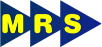
Vale
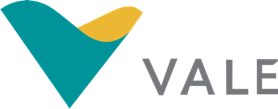
Wabtec
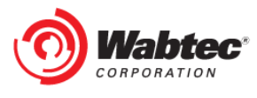
MetrôRio
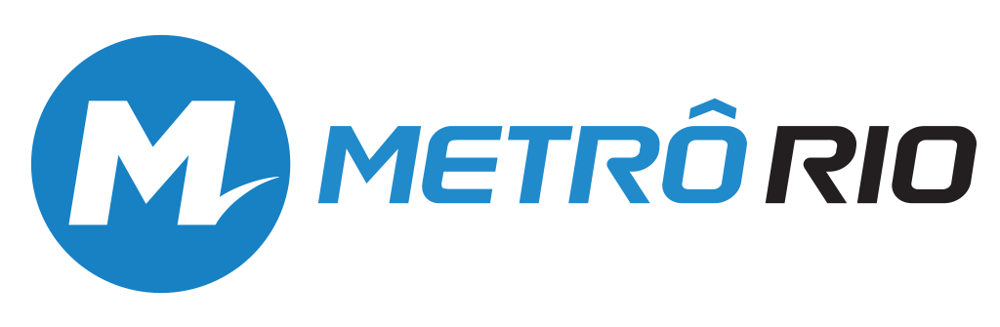
SuperVia
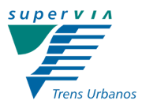
VLT Carioca
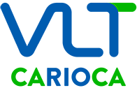
Alstom
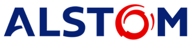
Siemens
Rumo
Motiva (CCR)
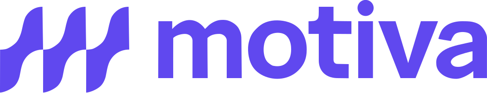
Wise
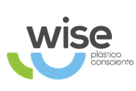
Águas do Rio
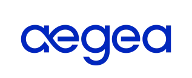
Slide 04 · Indicadores
Números que comprovamJ Queiroz
Track record acumulado
Operação que atravessa os maiores nomes do setor.
17anos
Sem interrupção
Atuação contínua no setor ferroviário desde 2009.
87PNs
Passagens de nível
55 na EFC e 32 na EFVM. Contratos Wabtec e Vale.
3,7k m³
Brita substituída
Linha 2 do MetrôRio em 12 meses, janela de 1h30 por dia.
10k+
Dormentes
Substituições executadas em todas as linhas do MetrôRio.
200km+
Cabos lançados
Sinalização e energização em ferrovias de carga.
35km
Linha 4 RJ
Sistema de Comando D.A.T. para os Jogos Olímpicos 2016.
12+
Grandes clientes
Operadores e fabricantes nacionais e globais.
2anos
1º lugar em segurança Vale
Premiação consecutiva por desempenho em saúde e segurança nos contratos Vale.
Slide 05 · Cinco Frentes
Cinco Frentes de AtuaçãoJ Queiroz
Como organizamos a operação
O que entregamos de ponta a ponta.
01
Sinalização
Circuitos de via, sistemas de comando, integração com Wabtec, Siemens e Alstom. Mais de 33 mil metros de cabos lançados.
02
Energia e Rede Aérea
Rede aérea 13kV, subestações de alta tensão, montagem de reativos e lançamento de cabos.
03
Telecom e Pátios
Infraestrutura de telecom em estações, automação de pátios, passagens de nível e tratamento de tração.
04
Via Permanente
Substituição de dormentes, soldas, nivelamento, socaria e desguarnecimento de lastro. Operação em janelas restritas.
05
Material Rodante
Manutenção preventiva e corretiva de trens, motores, rodeiros, truques e ar-condicionado.
Slide 06 · Linha do Tempo (subida)
Linha do Tempo · 2009 a 2026J Queiroz
17 anos. Cada ano um degrau.
Da fundação ao topo da malha ferroviária.
2009
Fundação. Primeiras parcerias ferroviárias.
2014
DAT, Piloto Automático e tração no MetrôRio. Início das obras das Olimpíadas.
2016
Olimpíadas RJ. Linha 4 entregue.
2019
Sinalização e adequação técnica nos pátios. Início da via permanente MetrôRio.
2021
Contrato direto Vale. Mãe Maria. Rede aérea e sinalização.
2022
Renovação da via permanente MetrôRio.
2024
Início das 32 PNs na EFVM.
2026
Renovação das PNs na EFC. Frota expandida em 15 estados. Dobro de contratos.
Slide 07 · Seção 01 Sinalização
Frente 01
Sinalização
Onde o trem precisa saber onde está, para onde vai e quando parar. Cabos, circuitos de via, automação de pátios e passagens de nível.
01
Slide 08 · Vale Sinalização
Sinalização · ValeJ Queiroz
Vale · EFC
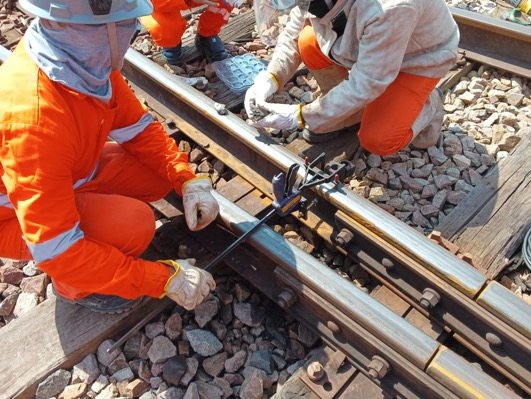
Cliente · VALE
Sinalização na Estrada de Ferro Carajás.
Cabos e circuitos. Tudo o que faz o trem responder.
Lançamento em larga escala de cabos de sinalização na EFC. Implantação de mais de duzentos circuitos de via. Operação direta no eixo de exportação do minério Vale.
33km
Cabos de sinalização
200+
Circuitos de via
Slide 09 · Wabtec 55 PN EFC
Sinalização · Wabtec e ValeJ Queiroz
Wabtec · EFC
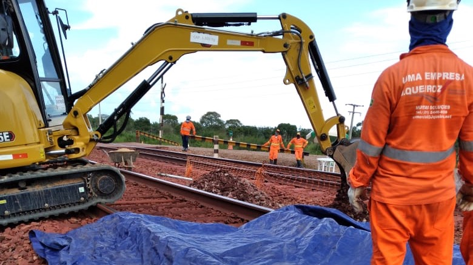
Clientes · WABTEC e VALE
55 Passagens de Nível na EFC.
Três frentes simultâneas. Sessenta operadores. Um cronograma.
Implantação completa em três frentes simultâneas. Cada PN com abrigo. Trinta e sete racks remotos. Mais de duzentos quilômetros de cabos. Vinte e dois quilômetros de valetamento.
55
Passagens de nível
200km
Cabos lançados
37
Racks remotos
22km
Valetamento
60+
Trabalhadores em campo
Slide 10 · Wabtec galeria EFC
Sinalização · Wabtec e Vale · Operação em CampoJ Queiroz
Cronograma. Mantido.
Mesmo com duas paralisações pela pandemia, noventa dias ao todo, o cronograma permaneceu em dia.
A operação não parou no que importa. Replanejamento, frente tripla e disciplina de execução entregaram a obra dentro do prazo combinado.
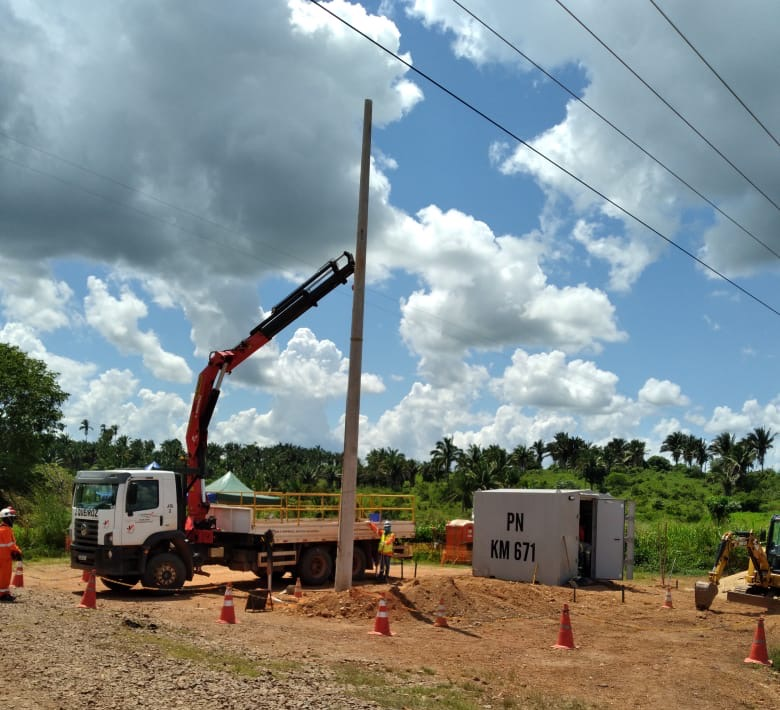
Frentes simultâneas. 60+ trabalhadores em campo.
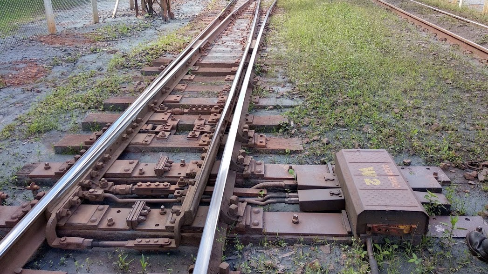
Adequação de pátios Vale. Automação Wabtec.
Passagens de nível concluídas. EFC.
Slide 11 · NOVO · FIPS Rumo Porto Santos
Sinalização · FIPS e RumoJ Queiroz
FIPS · Rumo
Foto a inserir Terminal de Outeirinhos
Em produção · aguardando dados
Cliente · FIPS / RUMO · Parceria Wabtec
Sinalização do Terminal de Outeirinhos.
Porto de Santos. Um dos terminais mais movimentados do Brasil.
Implantação de sinalização ferroviária no terminal portuário de Outeirinhos. Operação conjunta com Wabtec. Atendimento direto à malha de exportação da Rumo.
__
Extensão do trecho
__
Circuitos de via
__
Prazo de execução
Slide 12 · Vale EFVM Pátios c/ Wabtec
Sinalização · Vale EFVM · PátiosJ Queiroz
Vale · EFVM
Clientes · VALE e WABTEC
Adequação de Pátios na EFVM.
Itabira e Ipatinga. Onde o minério ganha rota.
Adequação de sinalização nos pátios Conceição, João Paulo e Intendente Câmara, localizados em Itabira e Ipatinga (MG). Projeto de automação Wabtec. Operação direta nos nós de manobra que sustentam o fluxo da Vitória a Minas.
3
Pátios adequados
2
Cidades em MG
EFVM
Vitória a Minas
Slide 13 · NOVO · EFVM 32 PNs
Sinalização · Vale EFVMJ Queiroz
Vale · EFVM
Foto a inserir EFVM Vitória a Minas
Em produção · aguardando dados
Clientes · VALE e WABTEC
32 Passagens de Nível na EFVM.
Vitória a Minas. A coluna ferroviária do minério brasileiro.
Implantação de trinta e duas passagens de nível ao longo da Estrada de Ferro Vitória a Minas. Continuação direta da experiência consolidada na EFC com Wabtec.
32
Passagens de nível
__
Cabos lançados
__
Frentes simultâneas
Slide 14 · NOVO · Vale PNs polímeros EFC Wise
Sinalização · Vale EFC · PolímerosJ Queiroz
Vale · EFC
Foto a inserir PNs de polímeros
Em produção · aguardando dados
Cliente · VALE · Parceria Wise
Passagens de Nível de Polímeros na EFC.
Material novo. Mesma exigência. Mesmo padrão Vale.
Implantação de PNs com componentes em polímeros na Estrada de Ferro Carajás. Operação conjunta com Wise. Adoção de tecnologia mais leve e durável para travessias rodoviárias.
__
PNs em polímero
__
Trecho EFC
__
Prazo
Slide 15 · Vale Saúde, Segurança e Conduta
Vale · Saúde, Segurança e CondutaJ Queiroz
Padrão Vale. Auditoria aprovada.
Auditoria superada. Conduta certificada.
Dentro da Vale, segurança não é cláusula. É filtro. Quem não passa, não opera. A J Queiroz passa, opera e é convidada a continuar.
A confirmar · 1º lugar em segurança Vale por 2 anos consecutivos
100%
Engajamento de ROS
Aderência integral em todos os meses do ciclo de auditoria Vale.
96%
Auditoria de RAC
Aderência média ao longo do ciclo. Meta Vale: 90%. Resultado: 95,84% a 96,68%.
95%
Auditoria de NR
Atividades Críticas. Meta 90%. Resultado: 93,63% a 97,03% no período.
+
Sustentabilidade
Canteiros de obras com painéis solares. Indicadores proativos de saúde e meio ambiente.
Slide 16 · Seção 02 Energia
Frente 02
Energia e Rede Aérea
Sem energia, ferrovia não anda. Rede aérea de média e alta tensão, subestações e reativos para os maiores operadores do país.
02
Slide 17 · Vale Mãe Maria 13kV
Energia · ValeJ Queiroz
Vale · Pará
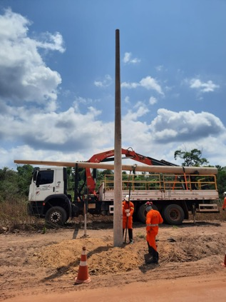
Cliente · VALE
Rede Aérea 13kV Mãe Maria.
Energização integral. 190 postes. Mais de 10 km de cabos.
Implantação completa de rede aérea de média tensão na EFC. Estrutura de energização integral. Lançamento de cabos em extensão superior a dez quilômetros.
190
Postes instalados
10km+
Cabos lançados
13kV
Média tensão
Slide 18 · MetrôRio Subestações
Energia · MetrôRioJ Queiroz
MetrôRio · 145kV
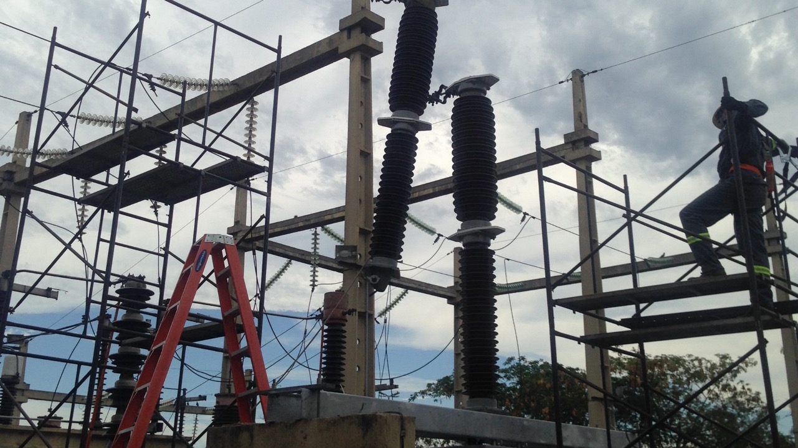
Cliente · METRÔRIO
Subestações de Alta Tensão.
Disjuntor de 145kV. Três pátios. Tratamento de tração.
Substituição do disjuntor de 145 kV na subestação de Colégio. Atuação na subestação de Cidade Nova. Ruptores de emergência nos pátios Norte, Leste e Oeste do Centro de Manutenção. Tratamento de tração no pátio Norte e estação Uruguai.
145kV
Disjuntor SE Colégio
3
Pátios atendidos
2
Subestações
Slide 19 · NOVO · Siemens L8 L9 SP
Energia · Siemens · São PauloJ Queiroz
Siemens · SP
Foto a inserir Linhas 8 e 9 São Paulo
Em produção · aguardando dados
Cliente · SIEMENS · São Paulo
Rede Aérea Linhas 8 e 9.
Duas das linhas mais movimentadas da CPTM, em parceria com a Siemens.
Sistema de rede aérea para as Linhas 8 e 9 de São Paulo, em projeto Siemens. Continuação direta da relação consolidada na L4 RJ olímpica e nas estações de telecom Higienópolis e Oscar Freire.
2
Linhas atendidas
__
Quilômetros de rede
__
Prazo
Slide 20 · NOVO · VLT Terminal Gentileza TIG
Energia · VLT CariocaJ Queiroz
VLT · TIG
Foto a inserir Terminal Intermodal Gentileza
Em produção · aguardando dados
Cliente · VLT CARIOCA
Terminal Gentileza TIG. Energização.
A nova porta de entrada do VLT no Centro do Rio.
Projeto e instalação de energização do Terminal Intermodal Gentileza, integrado à malha do VLT Carioca. Continuação da operação iniciada no túnel da Providência (L190).
__
Carga instalada
__
Posições energizadas
__
Prazo de execução
Slide 21 · NOVO · SuperVia Manutenção Elétrica
Energia · SuperViaJ Queiroz
SuperVia · RJ
Foto a inserir Manutenção elétrica SuperVia
Em produção · aguardando dados
Cliente · SUPERVIA
Manutenção Elétrica.
Energia, sinalização e equipamentos de tração da SuperVia.
Manutenção elétrica nos ramais da SuperVia. Atuação em sistemas de energização, alimentação dos trens urbanos e equipamentos de campo do operador metropolitano do Rio.
__
Subestações atendidas
__
Equipamentos
__
Vigência
Slide 22 · Seção 03 Via Permanente
Frente 03
Via Permanente
Dormente, lastro, solda, fixação. O que sustenta o trem. Operação em janela de 1h30 por dia, sem espaço para ajustes.
03
Slide 23 · MetrôRio Via Permanente
Via Permanente · MetrôRioJ Queiroz
MetrôRio · Linha 2
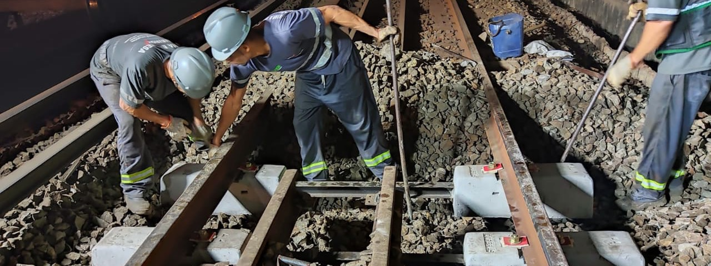
Cliente · METRÔRIO
Manutenção de Via Permanente.
Em janela de 1h30 por dia. Todos os dias.
Manutenção de via permanente em todas as linhas do MetrôRio. Em doze meses, mais de 3.700 m³ de brita substituídos só na Linha 2. Equipamentos próprios. Procedimentos otimizados durante o contrato.
3.700m³
Brita substituída
1.707
Dormentes
38k
Fixações trocadas
262
Soldas executadas
1h30
Janela diária de trabalho
Slide 24 · MetrôRio Solda Lastro
Via Permanente · MetrôRio · OperaçãoJ Queiroz
Frota dedicada. Procedimentos próprios.
Solda. Nivelamento. Lastro. Tudo na mesma janela noturna.
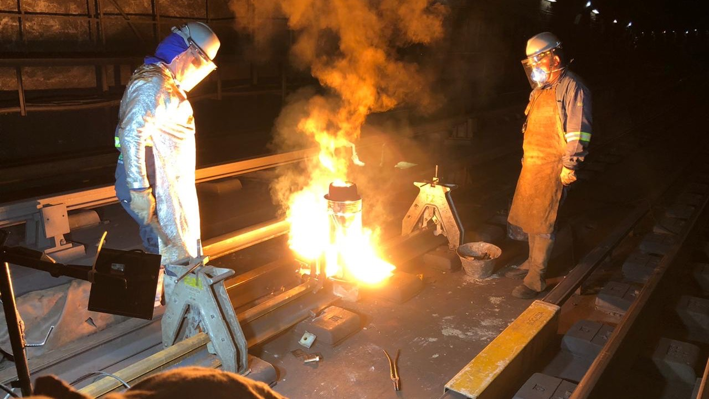
Solda de trilhos. MetrôRio.
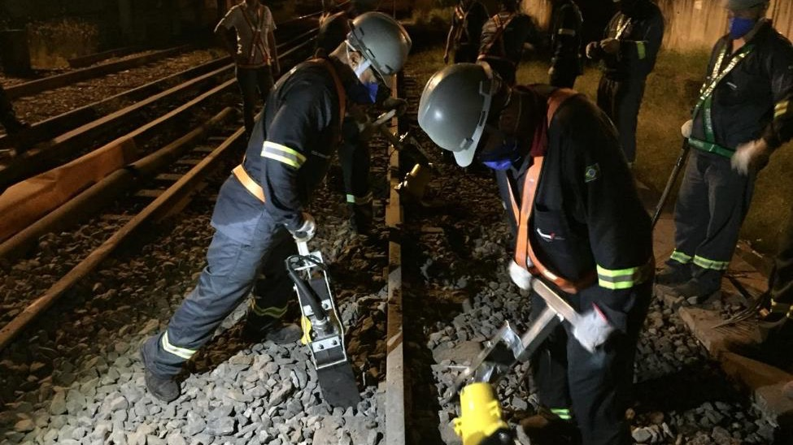
Nivelamento e socaria de lastro.
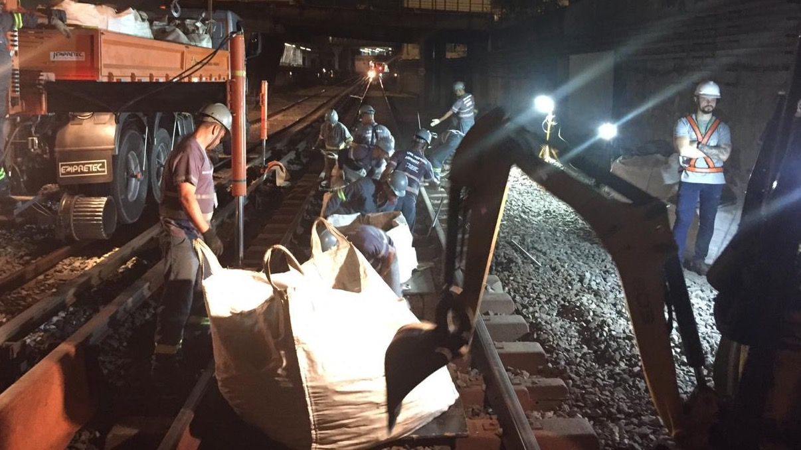
Desguarnecimento de lastro. Linha 2.
Slide 25 · NOVO · MetrôRio Renovação 3x
Via Permanente · MetrôRio · RenovaçãoJ Queiroz
MetrôRio · Renovação
Foto a inserir Operação atual
Atualizar com números 2025/2026
Cliente · METRÔRIO
Contrato Renovado. Triplo da produção.
Quando o cliente confia, ele pede o triplo.
O MetrôRio renovou o contrato de manutenção de via permanente para o triplo da produção anterior, pelos próximos 36 meses. Mobilização ampliada. Frota dedicada reforçada.
3×
Volume de produção
36m
Duração do contrato
__
Equipamentos novos
Slide 26 · NOVO · SuperVia Via Permanente
Via Permanente · SuperViaJ Queiroz
SuperVia · RJ
Foto a inserir SuperVia trens urbanos
Em produção · aguardando dados
Cliente · SUPERVIA
Manutenção de Via Permanente.
Trens urbanos do Rio. Centenas de milhares de passageiros por dia.
Manutenção de via permanente nos ramais da SuperVia. Operação contínua para garantir disponibilidade dos trens urbanos da região metropolitana do Rio de Janeiro.
__
Quilômetros de via
__
Ramais atendidos
__
Vigência do contrato
Slide 27 · Seção 04 Telecom Pátios Material Rodante
Frentes 04 e 05
Telecom, Pátios e Material Rodante
Da estação ao truque do trem. Telecom em metrô, automação de pátios, tratamento de tração e manutenção de material rodante.
Linha 4 olímpica. Telecom em SP. Sinalização Alstom em 45 dias.
Para os Jogos Olímpicos 2016, fornecemos o Sistema de Comando D.A.T. da L4 RJ, equivalente a 35 km de extensão em projeto Siemens. Para a Siemens SP, a infraestrutura de telecom das estações Higienópolis e Oscar Freire. Para o consórcio Alstom/Siener, o trecho de sinalização em Antero de Quental concluído em 45 dias ininterruptos.
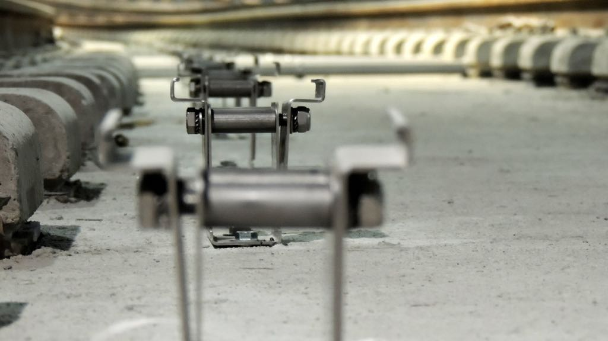
L4 MetrôRio. Sistema de Comando D.A.T. Siemens.
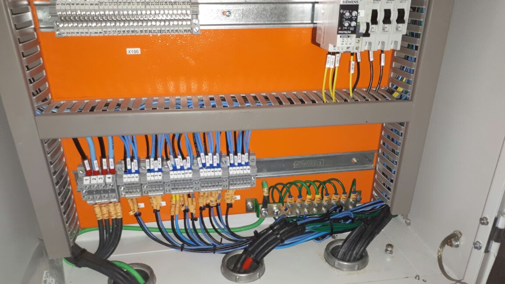
Siemens SP. Telecom estação Higienópolis.
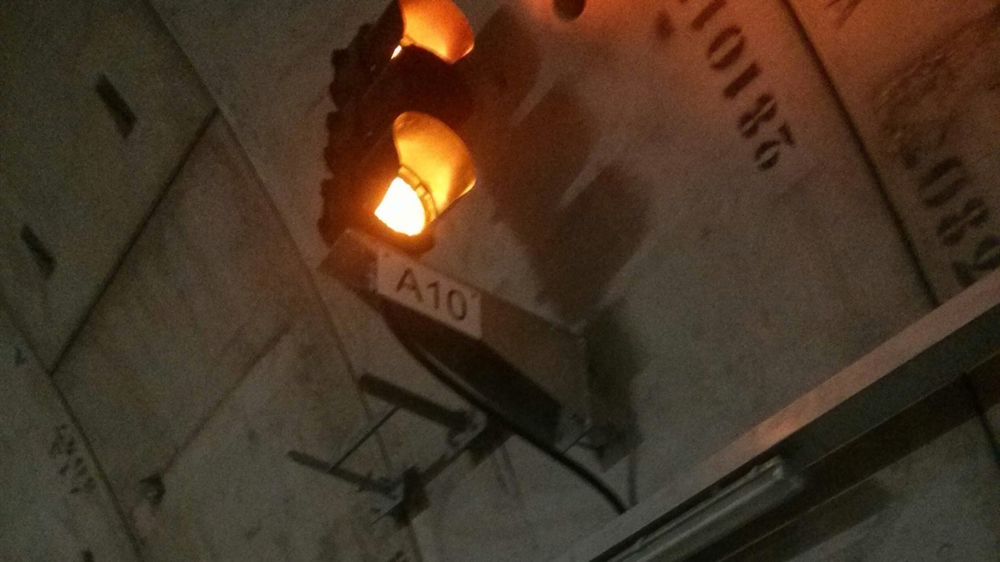
Alstom. L4 Antero de Quental. 45 dias ininterruptos.
Slide 29 · MRS VLT Nitriflex
Material Rodante e Apoio · MRS · VLT · NitriflexJ Queiroz
Operação em três frentes adicionais
Manutenção de trens. Segurança em túnel. Subestação industrial.
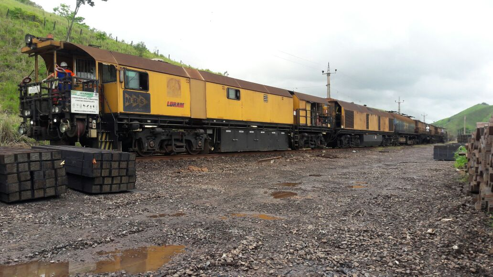
MRS Logística. Manutenção HVAC dos trens. MG e RJ.
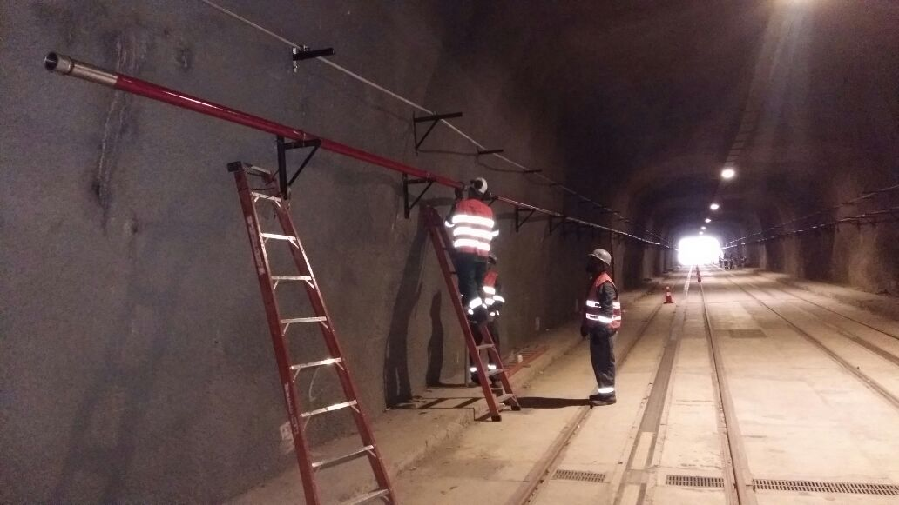
VLT Carioca. Sistemas de segurança túnel da Providência. L190.
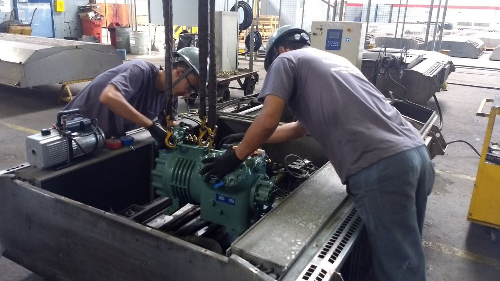
SuperVia. Manutenção preventiva de material rodante.
Nitriflex (próximo à Reduc): Lançamento de cabos e testes da subestação 13,8 kV. Integração à malha industrial de gás e produtos químicos.
Slide 30 · Frota
Frota Ferroviária PrópriaJ Queiroz
Mobilização imediata
Equipamentos próprios. Disponibilidade em janelas curtas.
Atualizar contagem total da frota 2026
Frota especializada para operar em janelas de manutenção restritas. Caminhões rodoferroviários com munck. Retroescavadeiras com rototilt. Equipamentos para substituição de dormentes. Mobilização em todo o território nacional.
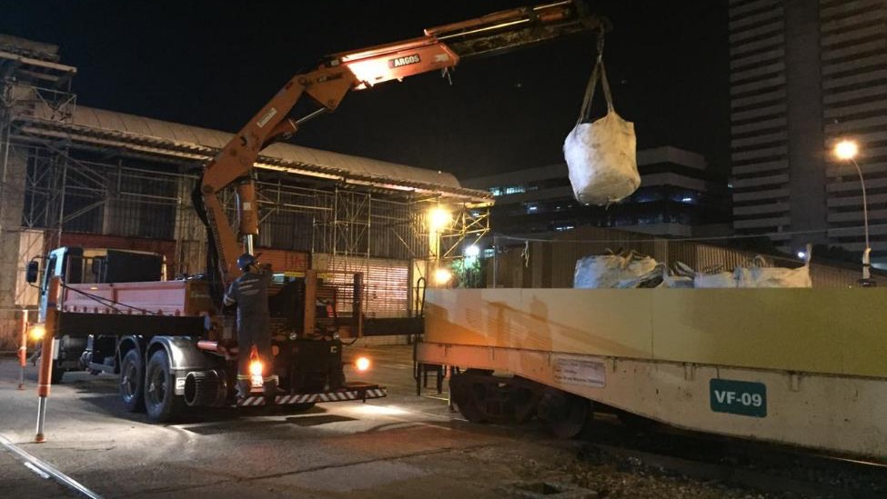
Caminhão rodoferroviário com munck.
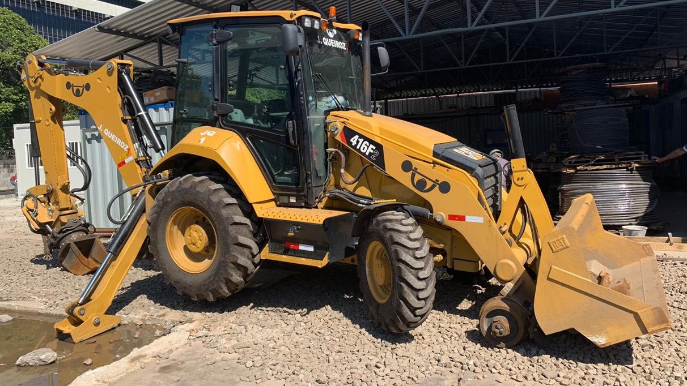
Retroescavadeira com rototilt.
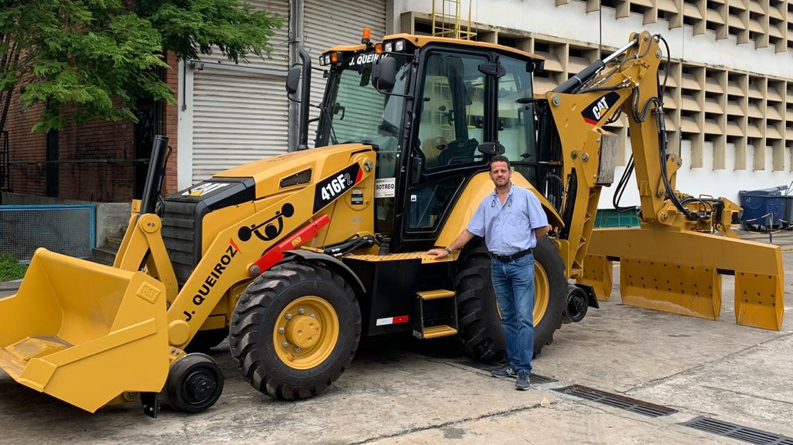
Retroescavadeira para substituição de dormentes.
Slide 31 · Por que J Queiroz
Por que J QueirozJ Queiroz
Diferenciais consolidados
Precisão técnica. Robustez operacional.
01
Track record
17 anos atuando junto aos maiores operadores e fabricantes do Brasil. Vale, Wabtec, Siemens, Alstom, MetrôRio, MRS, SuperVia, VLT.
02
Frota própria
Equipamentos rodoferroviários, retroescavadeiras com rototilt e caminhões munck dedicados. Mobilização imediata em todo o território nacional.
03
Janela de 1h30
Capacidade comprovada de executar em janelas restritas. MetrôRio renovou contrato para 3× a produção pelos próximos 36 meses.
04
Acidente zero
Auditoria Vale aprovada em RAC e Atividades Críticas com meta superior a 80%. Padrão de saúde e segurança como referência nacional.
05
Resiliência
Cronograma Wabtec mantido em dia mesmo com 90 dias de paralisação na pandemia. Capacidade de replanejamento e execução sob pressão.
Slide 32 · Encerramento
Vamos conversar.
Projetos como estes impactam a vida da população brasileira. Da qual fazemos parte. A quem temos orgulho em servir. Estamos à disposição para detalhar qualquer um dos contratos apresentados.